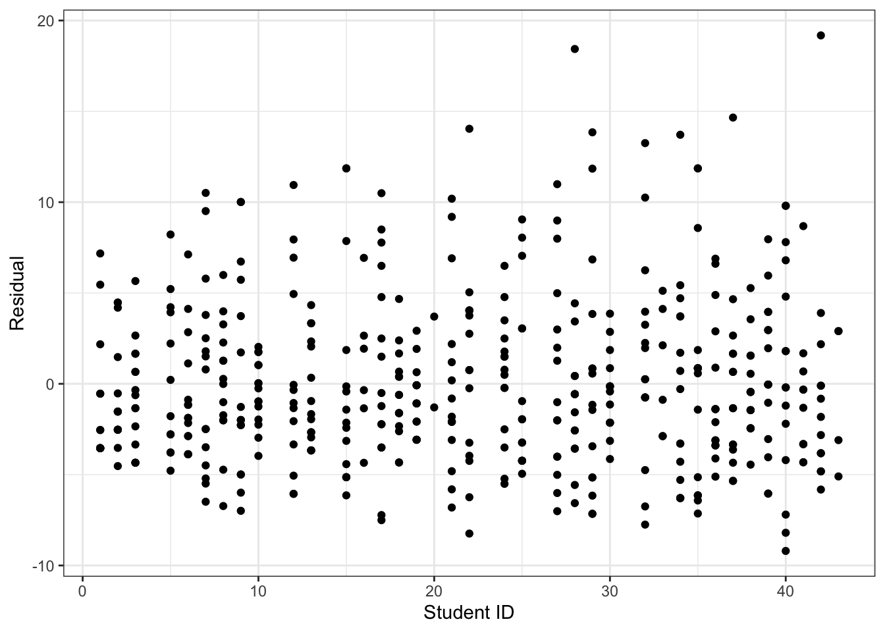

Anxiety can affect musicians before performances, and can negatively affect their ability to play and their emotional state. In a 2010 study, researchers examined anxiety in 37 undergraduate music majors. For each musician, data was collected on anxiety levels before different performances (between 2 and 15 performances were measured for each musician). Each row in the data represents one performance; in this activity, we will work with the following variables:
id: a unique identifier for the musician
na: negative affect score (a measure of anxiety)
large: whether the musician was performing as part of a large ensemble (large = 1), or as part of a small ensemble or solo (large = 0)
The researchers hypothesize that students will be less anxious when performing in large ensembles. Furthermore, the researchers suspect that overall anxiety varies between individuals, but that the effects of ensemble size (large vs. small) are the same for each individual. They therefore write down the following mixed effects model:
The following code imports the data and saves it as a data frame called music:
music <-read_csv("https://sta214-f25.github.io/class_activities/music.csv")
Questions
Fit the mixed effects model described above.
Solution:
library(tidyverse)library(lme4)music <-read_csv("https://sta214-f25.github.io/class_activities/music.csv")m1 <-lmer(na ~ large + (1|id), data = music)summary(m1)
Linear mixed model fit by REML ['lmerMod']
Formula: na ~ large + (1 | id)
Data: music
REML criterion at convergence: 2995.1
Scaled residuals:
Min 1Q Median 3Q Max
-1.9659 -0.6929 -0.1730 0.4810 4.0985
Random effects:
Groups Name Variance Std.Dev.
id (Intercept) 5.477 2.34
Residual 21.899 4.68
Number of obs: 497, groups: id, 37
Fixed effects:
Estimate Std. Error t value
(Intercept) 16.6973 0.4654 35.876
large -1.7183 0.5331 -3.223
Correlation of Fixed Effects:
(Intr)
large -0.305
Does the fitted model support the researchers’ hypothesis that students will be less anxious when performing in large ensembles? Explain your answer.
Solution: Yes – the coefficient on Large ensembles is negative, which means that we estimate lower levels of anxiety for students performing in large ensembles than for students performing in small ensembles or solos.
Does the fitted model support the researchers’ hypothesis that there is variability in anxiety between students? Calculate and interpret a statistic that supports your answer, and explain your reasoning.
Solution: Here we can calculate the estimated intra-class correlation coefficient:
\[\widehat{\rho}_{group} = \dfrac{5.477}{5.477 + 21.899} = 0.20\] That is, we estimate that after accounting for the effect of ensemble size, about 20% of variability in anxiety can be explained by differences between students. This is a moderate amount of intra-class correlation, and suggests that there may be systematic variability in anxiety between students.
Model diagnostics
Now let’s check assumptions for our fitted model.
One assumption our model is making is that the variance of the residual term \(\varepsilon_{ij}\) is the same for each student.
Create a scatterplot showing the residuals for your fitted model, plotted against student ID (normally I would suggest boxplots here, but there aren’t enough observations for each student). Does it seem plausible that the variance of the residuals is the same for each student?
Just like with a linear regression model, the residuals function can be used to extract residuals from the fitted mixed effects model.
Solution:
data.frame(id = music$id, residuals =residuals(m1)) |>ggplot(aes(x = id, y = residuals)) +geom_point() +theme_bw() +labs(x ="Student ID", y ="Residual")

It does seem plausible that the variance of the residuals is the same for each student.
Another assumption is that the residual term \(\varepsilon_{ij}\) follows a normal distribution.
Create a QQ plot for the residuals. Does it seem reasonable to assume normality here?
If you like ggplot, then geom_qq and geom_qq_line may be helpful
There are some departures from normality in the tails here – we can see that the right tail is too heavy, and the left tail is too light, which suggests a right-skewed distribution for the residuals. However, I don’t think the departure from normality is so extreme as to warrant a transformation of the response.
Finally, let’s look at the distribution of the random effects \(u_i\), which we also assume is normal.
Create a QQ plot for the estimated random effects \(\widehat{u}_i\). Does normality seem plausible?
Solution: Normality does seem plausible for the random effects, as shown in the QQ plot below – the points fall pretty closely to the diagonal line.
data.frame(ranefs =ranef(m1)$id[,1]) |>ggplot(aes(sample = ranefs)) +geom_qq() +geom_qq_line() +theme_bw() +labs(x ="Theoretical normal quantiles",y ="Observed random effect quantiles")